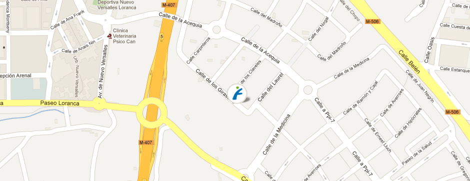

CONTACTO
HORARIOS
ACTIVIDADES
NOTICIAS
ÁREAS
INICIO
Contacto

Forus Fuenlabrada
C/Girasoles, 10 28942. Fuenlabrada
Madrid
CÓMO LLEGAR:
En autobús
Línea 1. Parada Avda. del vivero - Parada 11 y 27
Línea 4. Parada C/San Marcos, 22
En metro
Metrosur. Parada Hospital de Fuenlabrada
Enviar un email
Ver en google maps